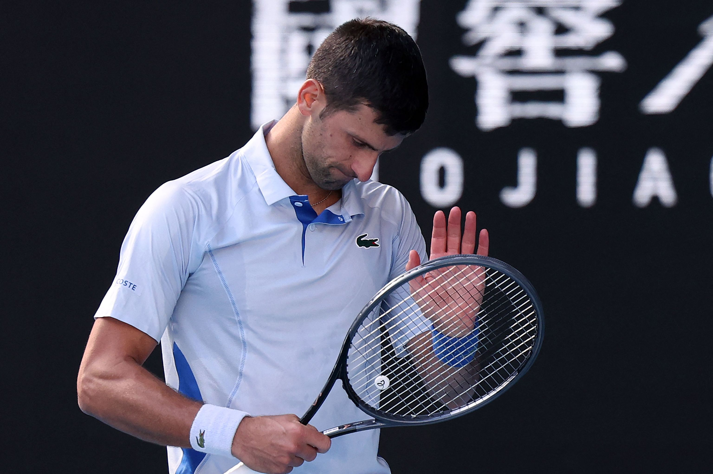

Zverev se proclama como campeon del masters de Roma
El aleman se proclamo ganador ante el Chileno Jarry
A falta de 12 dias para el juicio por supuesto maltrato a su expareja zverev se impone con un solido 6-4 7-5, el aleman volvio a conquistar en arcilla ante Jarry.
Zverev, bajo la presión de las próximas audiencias legales, mostró una notable capacidad para mantener su enfoque en el tenis. Su victoria sobre Jarry en este partido refleja no solo su destreza técnica sino también su fortaleza mental en medio de las controversias fuera de la cancha. La actuación de Zverev fue una combinación de potentes saques, consistencia en los intercambios y una estrategia eficaz para desmantelar el juego de su oponente chileno.
Este triunfo en arcilla es significativo para Zverev, no solo por el contexto personal complicado que atraviesa, sino también por reafirmar su dominio en una superficie donde ha tenido éxito en el pasado. La victoria sirve como un recordatorio de su talento y potencial para seguir siendo un contendiente formidable en el circuito ATP, independientemente de los desafíos personales que enfrenta.
Con el juicio acercándose, el rendimiento de Zverev en la cancha será observado de cerca, no solo por sus seguidores y detractores, sino también por los analistas y expertos del deporte que intentan separar su vida personal de su carrera profesional. Por ahora, su victoria contra Jarry destaca su capacidad para competir al más alto nivel, enfocándose en su juego y dejando de lado, al menos temporalmente, las preocupaciones legales que se ciernen sobre él.
Roland Garros 2024
Djokovic llega bajo mínimos a Roland Garros: derrotado por Machac, atendido, sin títulos y sin finales

Un Djokovic historico, el cual se empieza a apagar
El serbio acude a la defensa de la corona parisina con apenas nueve partidos disputados en la gira de tierra batida
El campeón de 24 grandes ha disputado nueve partidos en la gira europea de polvo de ladrillo de los que ha decantado a su favor seis. El martes, en la primera ronda del Abierto galo, le espera el invitado francés Pierre-Hugues Herbert.
Para encontrar su último entorchado hay que remontarse a las ATP Finals de Turín, en noviembre de 2023. El trofeo número 99 se le resiste.
Djokovic cederá su liderato ATP a Jannik Sinner si no alcanza la final del Abierto galo al no poder sumar puntos como vencedor de la pasada edición. El italiano, renqueante de la cadera, se convertiría en el vigesimonoveno número 1 de la historia.
Tenis español
Las declaraciones de Alcaraz que sorprendieron al mundo del tenis
"Para mi Nadal es un referente, dentro y fuera de la pista"
Estas fueron las declaraciones del Murciano cuando le dijeron si seguiria sus pasos dentro del torneo de Roland Garros, el murciano lo definio como "Director de orquesta"
Carlos Alcaraz, joven promesa del tenis español, ha mostrado en numerosas ocasiones su admiración por Rafael Nadal. Alcaraz, que ha seguido de cerca la carrera del 22 veces campeón de Grand Slam, busca emular su éxito en la pista de arcilla de Roland Garros. A pesar de su juventud, Alcaraz ha demostrado tener un talento excepcional y una determinación férrea, características que comparte con su ídolo. Sus recientes declaraciones resaltan no solo su respeto por Nadal como jugador, sino también por su integridad y comportamiento fuera de la pista, convirtiéndolo en un verdadero modelo a seguir.
Alcaraz, originario de Murcia, ha tenido un ascenso meteórico en el mundo del tenis, ganándose el apodo de "El Niño Maravilla". Desde temprana edad, ha mostrado una habilidad impresionante y una ética de trabajo que lo distingue de otros jugadores de su generación. Su juego agresivo y versátil, junto con una mentalidad fuerte, lo han posicionado como uno de los jugadores más prometedores en el circuito ATP. A medida que avanza en su carrera, Alcaraz sigue absorbiendo las lecciones y el ejemplo que Nadal ha establecido, tanto en su estilo de juego como en su enfoque hacia la competición.
En sus declaraciones, Alcaraz también enfatizó la importancia de la humildad y la dedicación, valores que ha aprendido al observar a Nadal. "Rafa siempre ha sido un ejemplo de cómo mantener los pies en la tierra, sin importar cuántos títulos gane", mencionó Alcaraz. Esta actitud le ha permitido mantener una perspectiva equilibrada, a pesar de la creciente atención mediática y las expectativas del público. Alcaraz está decidido a seguir trabajando duro, perfeccionando su juego y construyendo su legado en el tenis, inspirado por el camino que Nadal ha recorrido antes que él.